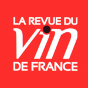

Texto original · 2012
Sobre o filme
Salão La Revue du Vin de France - Denis SAVEROT
Salão La Revue du Vin de France - Philippe MAURANGE
La Revue du Vin de France é uma publicação exclusiva sobre vinhos. A maior da França em termos de tiragem e, também, a mais antiga (foi lançada em 1927). O título, que hoje faz parte do Grupo Marie Claire, além da publicação mensal, também possui semanários junto ao jornal Le Monde, alguns guias como: “Os melhores vinhos da França” e “Os melhores vinhos por menos de € 20” e, ainda, promove anualmente, um salão (Le Salon du Vin de La Revue du Vin de France) que está, hoje, em sua 6ª edição.
A edição deste ano aconteceu nos últimos dias 2 e 3 de junho, no magnífico prédio da Bolsa de Valores de Paris, e contou com um público de 12.000 visitantes (um recorde do evento) e mais de 120 produtores. Durante 2 dias, e por apenas € 25, você pode degustar desde os grandes vinhos e Champagnes da França e muitos vinhos do mundo.
RENDEZVOUS esteve lá para conferir este fantástico encontro entre produtores e amantes do vinho e entrevistou Denis SAVEROT (Diretor de Redação) e Philippe MAURANGE (Crítico e Redator), que nos contou a grande novidade! Em breve, teremos o Salão no Brasil!!!!
Tags:Bordeaux, Denis SAVERO, França, Grand Cru Classés, Philippe MAURANGE, Salão de La Revue du Vin de France, video, vinho
